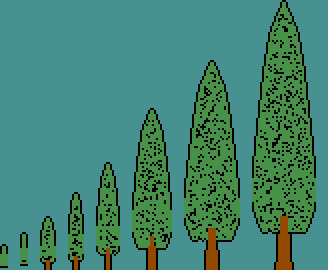
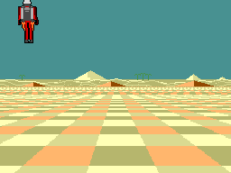
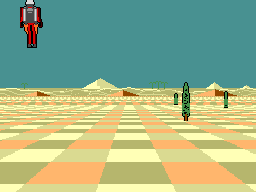

<title>Jetpack Desert</title>
<link rel="preconnect" href="https://fonts.googleapis.com">
<link rel="preconnect" href="https://fonts.gstatic.com" crossorigin>
<link rel="stylesheet" href="https://fonts.googleapis.com/css2?family=Chivo:ital,wght@0,400;0,700;0,900;1,400&family=IBM+Plex+Mono:wght@400;500;600&display=swap">
<style>
  :root {
    --sky:      #3f8c8c;
    --sand:     #ffb66d;
    --rose:     #ff6d6d;
    --ember:    #ff6d24;
    --deep:     #480000;
    --ink:      #1b1a18;
    --ink-soft: #55504a;
    --ground:   #f6f2ec;
    --panel:    #ffffff;
    --rule:     #e2dad0;
    --spare:    #cfc6ba;
    --shadow:   0 1px 2px rgba(27,26,24,.06), 0 8px 24px rgba(27,26,24,.06);
  }
  @media (prefers-color-scheme: dark) {
    :root:not([data-theme="light"]) {
      --ink:      #f3ece3;
      --ink-soft: #b3a99c;
      --ground:   #16110e;
      --panel:    #1f1813;
      --rule:     #352a22;
      --spare:    #3d3128;
      --shadow:   0 1px 2px rgba(0,0,0,.4), 0 10px 30px rgba(0,0,0,.35);
    }
  }
  :root[data-theme="dark"] {
    --ink:      #f3ece3;
    --ink-soft: #b3a99c;
    --ground:   #16110e;
    --panel:    #1f1813;
    --rule:     #352a22;
    --spare:    #3d3128;
    --shadow:   0 1px 2px rgba(0,0,0,.4), 0 10px 30px rgba(0,0,0,.35);
  }

  body {
    background: var(--ground);
    color: var(--ink);
    font-family: "Chivo", system-ui, -apple-system, "Segoe UI", sans-serif;
    font-size: 16px;
    line-height: 1.55;
    padding: 0 16px;
  }
  main { max-width: 760px; margin: 0 auto; padding-block: 40px 72px; }

  .eyebrow {
    font-family: "IBM Plex Mono", ui-monospace, monospace;
    font-size: 12px; font-weight: 600;
    letter-spacing: .14em; text-transform: uppercase;
    color: var(--ember);
    margin: 0 0 10px;
  }
  h1 {
    font-weight: 900; font-size: clamp(30px, 6vw, 44px);
    line-height: 1.05; letter-spacing: -.02em;
    text-wrap: balance; margin: 0 0 12px;
  }
  .standfirst {
    font-size: clamp(16px, 2.4vw, 19px); color: var(--ink-soft);
    max-width: 62ch; text-wrap: pretty; margin: 0 0 28px;
  }
  h2 {
    font-weight: 700; font-size: 20px; letter-spacing: -.01em;
    margin: 44px 0 6px; text-wrap: balance;
  }
  h2 + p { margin-top: 0; }
  p { max-width: 68ch; }
  .lede { color: var(--ink-soft); }

  figure { margin: 0; }
  .screen {
    background: var(--deep);
    border: 1px solid var(--rule);
    border-radius: 4px;
    box-shadow: var(--shadow);
    padding: 10px;
    display: flex; justify-content: center;
  }
  .screen img {
    display: block; width: 512px; max-width: 100%;
    height: auto; aspect-ratio: 4 / 3;
    image-rendering: pixelated;
  }
  figcaption {
    font-family: "IBM Plex Mono", ui-monospace, monospace;
    font-size: 12.5px; color: var(--ink-soft);
    margin-top: 10px; display: flex; flex-wrap: wrap; gap: 4px 14px;
  }
  figcaption b { color: var(--ink); font-weight: 600; }

  .budget { margin: 22px 0 0; }
  .bar {
    display: flex; height: 26px; border-radius: 3px; overflow: hidden;
    border: 1px solid var(--rule);
  }
  .bar span { display: block; height: 100%; }
  .seg-board  { background: var(--sky); }
  .seg-desert { background: var(--sand); }
  .seg-pilot  { background: var(--ember); }
  .seg-tree   { background: #4f8f3f; }
  .seg-fill   { background: var(--rose); }
  .seg-spare  { background: var(--spare); }
  .key {
    list-style: none; padding: 0; margin: 12px 0 0;
    display: grid; gap: 4px 20px;
    grid-template-columns: repeat(auto-fit, minmax(210px, 1fr));
    font-family: "IBM Plex Mono", ui-monospace, monospace;
    font-size: 13px; font-variant-numeric: tabular-nums;
  }
  .key li { display: flex; align-items: baseline; gap: 8px; }
  .key i {
    width: 9px; height: 9px; border-radius: 2px; flex: none;
    transform: translateY(-1px);
  }
  .key .n { margin-left: auto; color: var(--ink-soft); }

  .table-wrap { overflow-x: auto; margin-top: 14px; }
  table {
    border-collapse: collapse; width: 100%; min-width: 440px;
    font-size: 14.5px;
  }
  th, td { text-align: left; padding: 9px 12px 9px 0; border-bottom: 1px solid var(--rule); }
  th {
    font-family: "IBM Plex Mono", ui-monospace, monospace;
    font-size: 11.5px; font-weight: 600; letter-spacing: .1em;
    text-transform: uppercase; color: var(--ink-soft);
  }
  td.num, th.num {
    text-align: right; padding-right: 0;
    font-family: "IBM Plex Mono", ui-monospace, monospace;
    font-variant-numeric: tabular-nums;
  }
  tr.total td { font-weight: 700; border-bottom: none; }
  td .note { color: var(--ink-soft); font-size: 13px; }

  .rail {
    border-left: 3px solid var(--rose);
    padding: 2px 0 2px 16px; margin: 26px 0;
  }
  .rail p { margin: 0; }

  .then {
    display: grid; gap: 18px; align-items: start; margin-top: 14px;
    grid-template-columns: minmax(0, 1.1fr) minmax(0, 1fr);
  }
  @media (max-width: 620px) { .then { grid-template-columns: 1fr; } }
  .then .screen { padding: 8px; }
  .then img { width: 100%; }

  code {
    font-family: "IBM Plex Mono", ui-monospace, monospace;
    font-size: .92em;
    background: color-mix(in srgb, var(--rule) 55%, transparent);
    padding: 1px 5px; border-radius: 3px;
  }
  footer {
    margin-top: 52px; padding-top: 18px; border-top: 1px solid var(--rule);
    font-family: "IBM Plex Mono", ui-monospace, monospace;
    font-size: 12.5px; color: var(--ink-soft);
  }
</style>

<main>
  <p class="eyebrow">SAM Coupé · MODE 4 · 6 MHz Z80B</p>
  <h1>Jetpack Desert</h1>
  <p class="standfirst">
    <code>chequer10</code>: three trees on the board. The ground still rises
    to meet the pilot — a tenth of the screen when he is at the bottom of it,
    half the screen when he is at the top — and now things stand on it.
    A scaled sprite is <b>eight compiled sprites</b>, because scaling a masked
    shape as it is drawn costs a Z80 several times what drawing it does, so
    the tree is compiled at the eight heights the arcade uses and pops from
    one to the next as it comes in. 3,773 bytes for all eight, shared by three
    slots; 153,882 T-states a frame of the 240,000 a 25 Hz frame has, and
    222,452 in the worst of them.
  </p>

  <figure>
    <div class="screen">
      
    </div>
    <figcaption>
      <span><b>250 frames</b>, 10 seconds</span>
      <span>held at <b>25 Hz</b>, which is what it would run at</span>
      <span><b>256 × 192</b>, 16 colours</span>
    </figcaption>
  </figure>

  <div class="budget">
    <div class="bar" role="img"
         aria-label="The worst frame of the demo, 222,452 T-states of 240,000: board 124,066, desert 49,866, three trees 31,036, pilot 8,056, the mask and the rest 9,428, and 17,548 spare.">
      <span class="seg-board"  style="width:51.69%"></span>
      <span class="seg-desert" style="width:20.78%"></span>
      <span class="seg-tree"   style="width:12.93%"></span>
      <span class="seg-pilot"  style="width:3.36%"></span>
      <span class="seg-fill"   style="width:3.93%"></span>
      <span class="seg-spare"  style="width:7.31%"></span>
    </div>
    <ul class="key">
      <li><i class="seg-board"></i>the board, 96 rows<span class="n">124,066</span></li>
      <li><i class="seg-desert"></i>the desert<span class="n">49,866</span></li>
      <li><i class="seg-tree"></i>three trees<span class="n">31,036</span></li>
      <li><i class="seg-pilot"></i>the pilot, 24×48<span class="n">8,056</span></li>
      <li><i class="seg-fill"></i>the mask and the rest<span class="n">9,428</span></li>
      <li><i class="seg-spare"></i>spare in a 25 Hz frame<span class="n">17,548</span></li>
    </ul>
  </div>

  <h2>What it costs</h2>
  <p class="lede">
    Every number here was measured on an emulated Z80 against a Python model of
    the same picture, frame by frame — not estimated. The ranges are the
    shortest board and the tallest.
  </p>
  <div class="table-wrap">
    <table>
      <thead>
        <tr><th>Part of the frame</th><th class="num">T-states</th></tr>
      </thead>
      <tbody>
        <tr>
          <td>The board — 19 scanlines to 96, 10% of the screen to half of it<br>
              <span class="note">78 horizons, four colours, one run bank, 3,240 compiled bodies</span></td>
          <td class="num">28,669 … 124,066</td>
        </tr>
        <tr>
          <td>The swap masks, gathered out of the deep board's own<br>
              <span class="note">a DDA at 63 T-states a row, leaving out the rows the board does</span></td>
          <td class="num">1,513 … 6,903</td>
        </tr>
        <tr>
          <td>The desert — 20 scanlines, two layers, scrolling by pixels<br>
              <span class="note">rear layer 37,238 · front layer 12,628 over 33 spans</span></td>
          <td class="num">49,866</td>
        </tr>
        <tr>
          <td>The pilot — 24 × 48, anywhere on the screen<br>
              <span class="note">compiled as one descending walk of <code>SP</code>; he was 16,116 at 32 × 96</span></td>
          <td class="num">8,056</td>
        </tr>
        <tr>
          <td>The trees — three slots, 4 × 13 to 32 × 135, eight compiled sizes<br>
              <span class="note">24,720 in the frame for the largest alone; 31,036 for all three, staggered in depth</span></td>
          <td class="num">858 … 31,036</td>
        </tr>
        <tr>
          <td>Putting back what shrank<br>
              <span class="note">the boxes all four sprites left above the band, and the rows the board gave up</span></td>
          <td class="num">0 … 12,000</td>
        </tr>
        <tr class="total">
          <td>A frame, mean<br>
              <span class="note">min 94,465 · max 222,452 on the demo's own path, which is 93% — four frames of 250 over 90%</span></td>
          <td class="num">153,882</td>
        </tr>
      </tbody>
    </table>
  </div>


  <h2>A scaled sprite is eight sprites</h2>
  <p>
    Scaling a masked shape as it is drawn is the wrong shape of work for a
    Z80. A run of solid bytes through <code>PUSH</code> is 5.5 T-states a
    byte; any scaler worth the name is a read, a shift, a merge and a write
    per byte at four or five times that — before it has worked out which
    source row a destination row comes from. <b>So compile it at every size
    you will use.</b> The arcade does exactly this: its scenery pops from one
    size to the next as it comes in, and at 25 Hz the pop is invisible against
    the movement.
  </p>
  <figure>
    <div class="screen">
      
    </div>
    <figcaption>
      <span><b>3,773 bytes</b> for all eight</span>
      <span>13 to 135 scanlines</span>
      <span>326 bytes on a masked edge</span>
    </figcaption>
  </figure>
  <div class="table-wrap">
    <table>
      <thead>
        <tr><th>The tree</th><th class="num">box</th><th class="num">bytes to draw</th><th class="num">T-states</th></tr>
      </thead>
      <tbody>
        <tr><td>13 rows</td><td class="num">4 × 13</td><td class="num">24</td><td class="num">858</td></tr>
        <tr><td>39</td><td class="num">8 × 39</td><td class="num">140</td><td class="num">3,403</td></tr>
        <tr><td>81</td><td class="num">20 × 81</td><td class="num">624</td><td class="num">10,913</td></tr>
        <tr><td>135</td><td class="num">32 × 135</td><td class="num">1,535</td><td class="num">24,720</td></tr>
        <tr><td><b>all three, 19 + 54 + 135</b></td><td class="num">three slots</td><td class="num">1,829</td><td class="num"><b>31,036</b></td></tr>
      </tbody>
    </table>
  </div>
  <p>
    Each size is the pilot's own trick — one descending walk of <code>SP</code>
    over its box — and both generators now call the same walk, so a new object
    is a picture and a call rather than a second technique. 14.2 T-states a
    byte drawn at the largest size, which is the floor for a masked compiled
    sprite.
  </p>
  <div class="rail">
    <p>
      <b>Nothing clips, and that is the deal.</b> A walk of <code>SP</code> has
      no idea where the screen ends — it writes where it is put — so the caller
      has to know the whole box fits. Clipping would mean either a clipped
      variant of every size or an entry point per column, and neither is worth
      it when the object can simply not be drawn: here that <i>is</i> how a
      tree leaves, growing until the frame it would no longer fit in. What does
      need putting back is the part of its old box that was above the band's
      top, where the sky is painted once and never again — so the fill is
      sixteen <code>PUSH DE</code> in a row, entered at <code>16 − pairs</code>
      through <code>JP (IX)</code>, one routine for both sprites and any box.
      It is why a box here is rounded to a whole number of <code>PUSH</code>
      pairs.
    </p>
  </div>

  <h2>Three of them, and the depth sort is free</h2>
  <p>
    Three slots — nine contiguous bytes of size, left-hand byte and the row to
    stand on, and nine more per buffer for what has to be put back.
    <b>Slot 0 is the furthest</b>, and they are drawn in that order, so a
    nearer tree paints over a further one and that is the whole of the depth
    ordering for a handful of things standing on a plane. The caller keeps the
    slots sorted, which is three numbers a frame.
  </p>
  <p>
    The page goes in once for all three, and that is what shapes the loop:
    <code>LMPR</code> maps the low 32K, which is where the caller's own stack
    lives, so <b>nothing inside may <code>PUSH</code>, <code>POP</code> or
    <code>CALL</code></b>. The slot it is on is a memory cell rather than a
    register; the boxes come out of the <i>resident</i> copy of the table, at
    the top of the high 32K that <code>HMPR</code> maps and the <code>OUT</code>
    did not touch; and <code>cq10_ret</code> — where every compiled size
    returns to — is the top of the loop rather than the way out, with only the
    slot past the last putting the bank back. The pilot entered his sprite the
    same way, so he needed a return label of his own.
  </p>
  <div class="rail">
    <p>
      <b>What makes three affordable is the staggering, not the code.</b> One
      tree at 135 scanlines is 22,190 T-states and the frame has about 30,000
      spare at the tallest board — three near ones would not fit. Planted a
      third of a life apart, when the near one is at 135 the others are at 27
      and 19, and the three come to 31,036 rather than 66,000. Spread in depth
      looks like a design decision and is a budget one.
    </p>
  </div>

  <h2>Where they stand is the interesting half</h2>
  <p>
    Each tree is planted in the world — a depth and a lateral position — and
    everything on the screen follows from that: the size nearest
    <code>TREEH · FOCAL / d</code> pixels tall, and a left-hand byte from the
    same projection the board is drawn with. <b>But not the row.</b> A shallow
    board is the deep one with scanlines left out, so the depths actually on
    the screen are a <i>subset</i> of the deep board's, and the tree stands on
    the drawn row whose depth is nearest its own. Picking the nearest is both
    the only correct answer and what keeps it still relative to the ground
    while the horizon moves: the same piece of ground, whichever rows the
    horizon has chosen to draw.
  </p>
  <p>
    <b>And it is planted beside where the camera will be, not where it is.</b>
    The camera pans with the pilot, ±900 world units as he crosses the screen,
    which sweeps a distant object sideways far faster than the object closes —
    so a tree planted beside the camera's current position is off the side of
    the screen long before it arrives. Planting it beside where the camera will
    be when it arrives is one line, and it is the difference between scenery
    you fly past and scenery that never gets close. The lateral offsets cycle
    through six values between ±330 world units, so no two arrivals land in the
    same place and the three are never in a line — and at 6,800 units away that
    whole spread is nine pixels, which is why the far pair always sit near the
    middle.
  </p>

  <h2>The board does not tilt</h2>
  <p>
    The obvious way to move a horizon is to rescale the board into the room
    it has — put the camera lower as the horizon drops, so the same picture
    fits the fewer scanlines. It is wrong, and only obviously wrong once it
    moves: the squares at the bottom of the screen shrink as the horizon
    comes down, and the ground reads as <b>tilting away</b> rather than as
    being flown over.
  </p>
  <p>
    So the board is always the same 96-scanline picture, and a lower horizon
    draws it with rows left out — one row in two at 48 scanlines, one in five
    at 19. The width at the bottom of the screen stays 80 pixels and the
    width at the horizon stays 1, whatever the horizon is doing; what changes
    is how much depth is folded into the screen, which is what flying low
    over a plane actually does to it. The step through the deep board is
    <code>95 × 256 / (n − 1)</code> in 8.8 fixed point, with the accumulator
    started at half a step so both ends land exactly.
  </p>
  <div class="rail">
    <p>
      What it costs is that <b>which bands are drawn is now what a horizon
      chooses</b>, so each of the 78 horizons carries a band list of its own:
      four bytes a band — the scanlines it covers, how many squares wider the
      band below it was, and where its compiled bodies are. 4,105 entries,
      17K, against a 95K bank that does not change at all. And the mask has
      to lose the same scanlines the board does, which is a ten-instruction
      gather at 63 T-states a row where a rescaled board could <code>LDI</code>
      the first <i>n</i> rows at 16.
    </p>
  </div>

  <h2>One bank for every horizon</h2>
  <p>
    A horizon that moves looks like it multiplies every table by the number of
    positions it can take, and on a machine with thirty-two pages that ends the
    idea before it starts — and here there are sixty-five of them. It does
    not, and the reason is the whole trick:
    a square's width at row <i>y</i> is
    <code>round(S · (y − horizon) / CAMH)</code> and a scanline's depth is
    <code>CAMH · FOCAL / (y − horizon)</code>. <b>Both are functions of the
    row's distance from the horizon and of nothing else.</b> A row forty
    scanlines below the horizon is the same row wherever that is on the screen.
  </p>
  <p>
    So the band table — how many scanlines each square width gets — is one
    table at every horizon, and a taller board simply starts further down it,
    at the band holding the bottom row of the screen. Five bytes a horizon say
    which page to map, where in its band table to start, how many scanlines
    that is, and how wide the widest square is — and 65 × 5 is past what a
    byte will index, so the lookup is 16-bit. A horizon is allowed when the
    screen's bottom row is the last row of its band, because a band is drawn
    whole — which used to mean only 65 of the 78 rows in the range could be
    horizons at all. A list per horizon has no such rule: <b>every row in the
    range is a horizon now.</b>
  </p>
  <div class="rail">
    <p>
      The swap masks were expected to be the bill. They are 512 lookup tables
      indexed by depth, and the depth of a scanline is exactly what a moving
      horizon changes — so the earlier notes budgeted either 9,300 T-states a
      frame to compute the mask per scanline again, or a set of tables per
      horizon step, which does not fit in memory. Neither was needed: the
      tables are indexed by <i>depth</i>, and depth is that same function of
      distance from the horizon. They are the tables that were already there,
      generated 115 rows deep instead of 77 and copied as far as the horizon
      says — <b>ten instructions a scanline, 1,354 to 6,205 T-states.</b>
    </p>
  </div>
  <p>
    What the moving horizon does cost is memory, and it is paid in advance:
    pitching the horizon up brings coarser ground into view, so the board has
    to be compiled for squares up to 80 pixels wide rather than 64 — 3,240
    compiled row-loop bodies against 2,080, 95K of bank, twenty-two of the
    thirty-two pages <code>LMPR</code> can address.
  </p>

  <h2>Four colours on the board, for nothing at all</h2>
  <p>
    A Space Harrier ground is not two colours, it is two <i>pairs</i>: the
    rows of squares alternate between a pale pair and a darker one, so the
    board bands as it scrolls in. Here that is free, and the reason is that
    <b>the swap was only ever an XOR</b>. The mask byte for a scanline is
    <code>0x00</code>, or <code>CHQ4_SWAP</code> where the depth is odd; the
    row loop XORs the row's last byte with it and takes bit 4 of it as the
    offset to the value set's complement — and that complement is the same
    six register values XOR the same constant.
  </p>
  <p>
    So put a third bit in the constant. With <code>0xBB</code> rather than
    <code>0x33</code>, <code>1 ^ 0xB = 10</code> and <code>2 ^ 0xB = 9</code>:
    a swapped row draws 10 where an even row draws 1, so the checkerboard
    keeps its offset and the whole row comes out a shade down.
  </p>
  <div class="table-wrap">
    <table>
      <thead>
        <tr><th>Row of squares</th><th>slot A</th><th>slot B</th></tr>
      </thead>
      <tbody>
        <tr><td>even</td><td>1 — pale cream (luma 247)</td><td>2 — khaki (210)</td></tr>
        <tr><td>odd</td><td><b>10 — the darker: olive (174)</b></td><td>9 — sand (196)</td></tr>
      </tbody>
    </table>
  </div>
  <p>
    <b>Not one extra T-state</b> — the board measures 28,669 and 124,066 at
    the two ends of the horizon, which is what it measured in two colours —
    and not one extra byte of table, because every value set's complement was
    already there. What it costs is two palette indices, and that turned out
    to be the expensive currency: sixteen colours is sixteen colours, the
    pilot had twelve, so his two dark greys are one grey now.
  </p>
  <div class="rail">
    <p>
      <b>And the four have to be two pairs, not four steps of one ramp.</b>
      Spread them evenly and the board reads as columns running away to the
      horizon rather than as bands rolling in — in perspective a column of
      squares is one long converging wedge and a row of them is a thin strip,
      so the eye follows the wedges. The contrast has to go the other way
      round from the obvious: 1 and 2 a shade apart, 9 and 10 a shade apart,
      and the pairs a step and a quarter apart — 37 of luma across a band
      against 44 between them. Then what alternates across the screen is quiet
      and what alternates into it is loud, and no louder: the bands are a
      square row deep, and a square row near the horizon is three scanlines.
      <b>And the second pair goes in darker-first</b>: a swapped row draws 10
      where an even row draws 1, so that slot is where the checker's phase
      lives. Pair pale with pale — the obvious way round — and every column
      keeps its identity from the horizon to the bottom of the screen, one
      always pale and the next always dark, and the board reads as stripes
      running away however carefully the four are balanced. The fix is to
      exchange two palette entries; the contrasts are identical either way,
      which is why it does not show up in the numbers.
    </p>
  </div>
  <p>
    What the palette will not do is a dusty beige. A SAM colour is two bits a
    gun and a bright bit the three of them share, so every channel has the
    same parity and the only way up from a saturated orange is to raise the
    blue gun — (255,182,109) lightens to (255,182,182), which is pink, never
    to a paler tan. Its sands are yellow, orange, olive or pink, so these four
    are cream, khaki, olive and sand, and the arcade original's dusty beige is
    the one thing about it that cannot be matched here.
  </p>
  <p>
    The desert is drawn in the same four, plus two more the pilot gave up. The
    great pyramid takes the pale pair and the dune field the dark one — the
    aerial perspective it wanted anyway, for nothing, because those are
    indices the screen already has — and 13 and 14 buy green palms and a deep
    brown for the near pyramids' shadow faces, which is what makes them read
    as standing <i>in front of</i> the great one rather than as more sand.
  </p>
  <p>
    The bill lands on the pilot, as every colour decision here does: his
    flame's bright core is the flame now and his white highlights are the
    helmet's own grey. <b>Nine indices for him, four for the board, six for
    the desert — four of those the board's — and one flat sky.</b> Sixteen.
  </p>

  <div class="rail">
    <p>
      <b>And a square of camera is not a square of depth.</b> With two colours
      both of them just exchange the pair, so the camera's own x-square parity
      was folded into the mask table's index as though it were 256 more of
      depth. With four that is wrong — depth switches which <i>pair</i> as
      well — and crossing a square sideways inverted the banding over the
      whole screen: a flash every five frames at walking pace, which reads as
      the board stuttering rather than as a colour fault. They are separate
      XORs now, so a scanline has four states (<code>0x00</code>,
      <code>0x33</code> for the camera, <code>0xBB</code> for depth,
      <code>0x88</code> for both) and a value group holds four sets at 0, 16,
      128 and 144 — the mask byte AND <code>0x90</code> is the offset, which
      is the same instruction the row loop always had with a different
      constant. 3.5K a chunk and 684 T-states a frame.
    </p>
  </div>

  <h2>And there is no palette left</h2>
  <p>
    The distance fade on the board and the graded sky were both the palette:
    two entries reprogrammed on every scanline, which is what every chequered
    floor in this repo has done from the start. <b>On a SAM that is a line
    interrupt a row</b> — a palette entry is a port, not memory, and there is
    no copper to service it. 192 of them cost about a quarter of a 50 Hz
    frame, and they want interrupts <i>enabled</i>, which a routine drawing
    through <code>SP</code> with the stack pointed at the screen cannot have.
    The two things do not compose.
  </p>
  <p>
    So chequer9 does without: one palette, sixteen colours, for the whole
    screen and every frame. The sky is one flat teal, the board four flat
    sands, and the only depth cue left is the geometry — which turns out to
    be enough, because the square sizes and the banding were doing the work
    the fade was decorating. It costs an <i>index</i>: the board's colours
    start at 1 and the sky used to be 1 as well, one index meaning sky above
    the horizon and near ground below it, which only a per-scanline palette
    can pull off. With the palette sitting still, the sky needs one of its
    own.
  </p>
  <h2>The pilot walks the stack pointer</h2>
  <p>
    A compiled sprite with absolute addresses cannot move, and this one has to.
    The only pointer on a Z80 with an add is <code>SP</code>, so the whole
    sprite is <b>one descending walk of it</b> — rows bottom upwards, bytes
    right to left, so every step is a subtraction and the caller's only job is
    to put <code>SP</code> at the byte after his bottom right corner. Solid
    runs are <code>PUSH DE</code> a pair at 5.5 T-states a byte; a single byte
    is <code>POP BC / LD C,n / PUSH BC</code>, which reads its neighbour and
    writes it back unchanged; the 110 bytes where only one of his two pixels is
    his are the only read-modify-write left. He is <b>24 × 48 now and 8,066
    T-states</b>, where the same sprite at 32 × 96 was 16,116 and the version
    nailed to one place was 14,401. He is drawn from profiles rather than
    stored as a bitmap — a list of (row, left, right) that the rows between
    interpolate — so a smaller pilot is redrawn at the new size rather than
    resampled into it, which on a sprite with a one-pixel outline is the
    difference between smaller and broken.
  </p>
  <p>
    Everything is redrawn every frame, so nothing goes stale — except where the
    picture <i>shrinks</i>, because then nothing paints the rows it has given
    up. Two fills handle that: the rows of his old box that are above the
    band's top, and the rows the board loses when the horizon rises. Both are
    per buffer, and that is free — the paged map keeps a copy of the resident
    code behind each screen, so each buffer's record of what it was last drawn
    with is its own.
  </p>


  <h2>What the map holds, and what it claims</h2>
  <p>
    Those are not the same number, and the difference is the whole of what
    paging costs: a chunk gets a <i>pair</i> of 16K pages, because that is
    what <code>LMPR</code> maps. Eleven chunks claim 352K however much of
    them is compiled code. The test prints this table every run.
  </p>
  <div class="table-wrap">
    <table>
      <thead>
        <tr><th>In the map</th><th class="num">bytes</th><th class="num">pages</th></tr>
      </thead>
      <tbody>
        <tr><td>The board's five chunks<br><span class="note">compiled row loops to 80-pixel squares, and the band lists</span></td><td class="num">155,320</td><td class="num">10</td></tr>
        <tr><td>The swap masks<br><span class="note">512 tables, 96 rows deep — the only chunks that are exactly full</span></td><td class="num">65,536</td><td class="num">4</td></tr>
        <tr><td>The desert's two</td><td class="num">51,834</td><td class="num">4</td></tr>
        <tr><td>The pilot, three poses<br><span class="note">12% of the pair it is given</span></td><td class="num">4,032</td><td class="num">2</td></tr>
        <tr><td>The trees, eight sizes<br><span class="note">3,773 bytes of picture compiled into this — 2.8 bytes of code a byte drawn — and 32% of its pair</span></td><td class="num">10,384</td><td class="num">2</td></tr>
        <tr><td>The resident block, 2,436 bytes<br><span class="note">a copy behind each buffer, which is what makes per-buffer state free</span></td><td class="num">4,872</td><td class="num">—</td></tr>
        <tr><td>The two buffers</td><td class="num">49,152</td><td class="num">4</td></tr>
        <tr class="total"><td>Held<br><span class="note">of 416K claimed, so a 512K SAM</span></td><td class="num">341,130</td><td class="num">26</td></tr>
      </tbody>
    </table>
  </div>
  <div class="rail">
    <p>
      <b>The report is the thing that caught the error.</b> The tree's
      "3,773 bytes" had been in three sets of notes as its size; it is the
      size of its <i>picture</i>, and the compiled code is 10,384. A number
      nobody re-reads is a number nobody checks, so every test now prints
      what it holds and the runs are checked in beside the notes that quote
      them.
    </p>
  </div>

  <h2>Fifty ticks a second inside twenty-five frames</h2>
  <p>
    A SAA1099 wants feeding fifty times a second. This draws twenty-five
    times a second with interrupts off from one end of the frame to the
    other — <code>SP</code> is the screen for most of it, and an interrupt
    taken there <b>pushes <code>PC</code> into the picture</b>. So one of the
    two ticks a frame has to happen in the middle of the drawing.
  </p>
  <p>
    Polling the status register for it does not work: the frame bit is low
    for about 100 µs, which is <b>600 T-states</b> — half a scanline of
    board — so the check would have to go inside the row loop, where both
    register sets, <code>IX</code>, <code>IY</code> and <code>SP</code> are
    all live and there is no stack to save anything on. <b>So it is
    scheduled instead.</b> The frame is locked to two display frames, every
    band of the board costs a known number of T-states, and the caller pokes
    which band is 120,000 T-states in. Nothing can be missed, and the next
    frame's interrupt re-zeroes the phase so error cannot accumulate.
  </p>
  <div class="rail">
    <p>
      <b>The top of a band is the one free seam in the frame.</b> Inside a
      row everything is live; at a band boundary <code>chq4_b1</code>
      reloads <code>HL</code> from the band table and <code>A</code>,
      <code>DE</code> and <code>BC</code> from cells, and <code>SP</code> is
      dead until the next row sets it — so the main set, <code>IX</code>,
      <code>IY</code> and <code>SP</code> are all free there and only the
      alternate set survives. A tick that stays in the main set needs
      <i>nothing</i> saved: three instructions and 28 T-states to ask.
    </p>
  </div>
  <div class="table-wrap">
    <table>
      <thead>
        <tr><th>The tick</th><th class="num">T-states</th></tr>
      </thead>
      <tbody>
        <tr><td>The check, at a band that is not the one<br><span class="note">532 to 2,240 a frame — a board is 19 bands to 80</span></td><td class="num">28</td></tr>
        <tr><td>A tick with nothing to say<br><span class="note">most frames of an arrangement change nothing</span></td><td class="num">185</td></tr>
        <tr><td>The median frame, two register pairs</td><td class="num">422</td></tr>
        <tr><td>The worst frame in three minutes, 31 pairs</td><td class="num">2,662</td></tr>
        <tr class="total"><td>Sound, mean / worst<br><span class="note">0.9% and 3.2% — the worst frame of the demo goes from 93% to 95.8%</span></td><td class="num">2,242 / 7,564</td></tr>
      </tbody>
    </table>
  </div>
  <p>
    Two details fall out of the paging. The tick's <b>stack has to be in the
    high block</b>, because the caller's own is in chunk 0 and chunk 0 is
    paged away for most of the frame; and the tick <b>owns the low block</b>
    while it runs — the screen and the code are both up high — so it can
    page a 70K register log in over the run bank and put the chunk back, two
    <code>OUT</code>s and a saved byte.
  </p>

  <h2>What it replaced</h2>
  <div class="then">
    <figure>
      <div class="screen">
        
      </div>
      <figcaption><span><b>chequer9</b> · 139,314 T-states</span></figcaption>
    </figure>
    <p>
      The same flight with an empty board: everything below is chequer9's, and
      the trees are the only thing added. They cost about 14,600 T-states a
      frame on average and two pages of the map, and what they buy is the thing
      an empty chequerboard cannot give you at any frame rate — something to
      measure the speed against. Before them, the ground scrolls and the
      horizon rises and the only cue for how fast any of that is happening is
      the squares themselves.
    </p>
  </div>

  <h2>And at half the rate</h2>
  <div class="then">
    <figure>
      <div class="screen">
        
      </div>
      <figcaption><span><b>12.5 Hz</b> · the same ten seconds</span></figcaption>
    </figure>
    <p>
      The same ground covered in the same time, so half the update rate is
      twice the step a frame — 160 world units instead of 80, and a tree that
      grows through its eight sizes in 38 frames rather than 77. It is worth
      looking at because it is the trade this demo is one bad decision away
      from: the frame costs 93% of a 25 Hz budget, and anything that pushes
      it over lands here rather than halfway. <b>The judder is in the steps,
      not the rate</b> — everything moves by so much a frame that halving the
      rate doubles every step, which is why a demo that dropped to 12.5 Hz
      would have to halve its own speeds to stay watchable.
    </p>
  </div>

  <footer>
    Z80AIexperiments · chequer10.z80s, chequer4.z80s, desert.z80s,
    tests/mksprite.py, tests/mktree.py, tests/mkchq10data.py · bit-exact
    against tests/chequer10.py over 156 frames: all 78 horizons walked up the
    screen and back down, the pilot somewhere new every frame, and three trees
    at a different one of the eight sizes each · every run in reports/ ·
    sound.md and tests/test_snd.py for the tick
  </footer>
</main>

</body></html>
